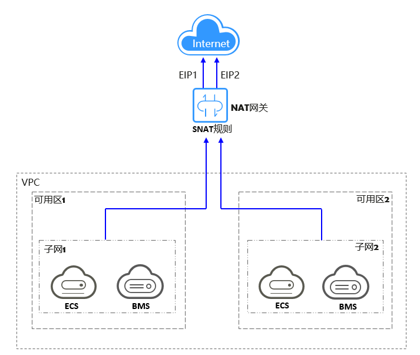
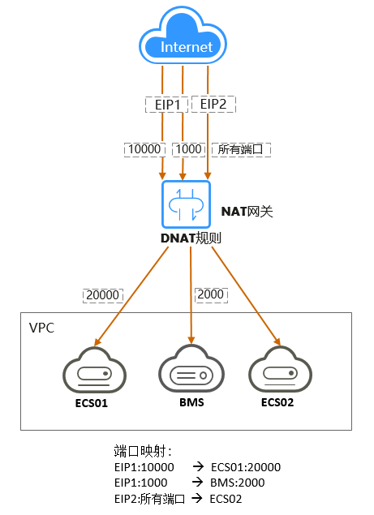
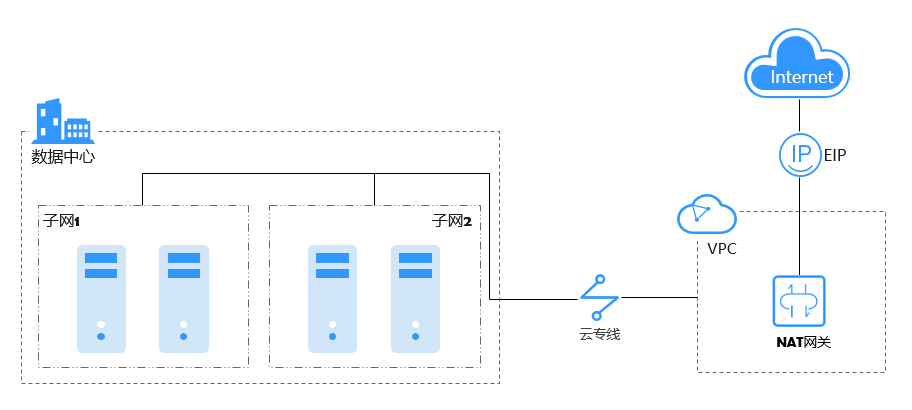
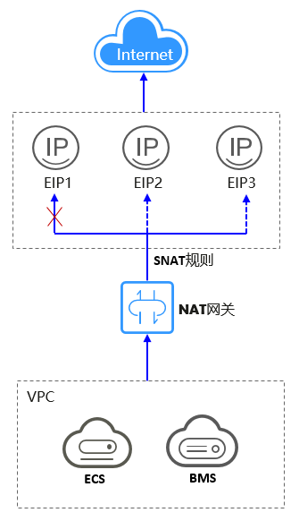
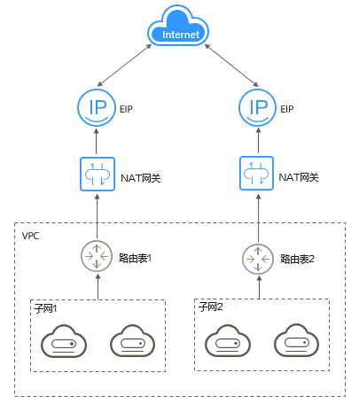
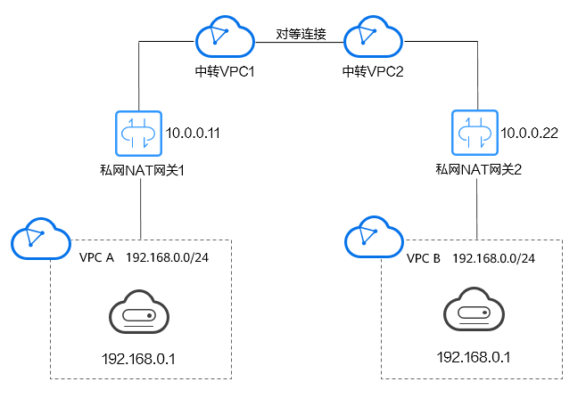

应用场景¶
1. 公网NAT网关¶
-
使用SNAT访问公网
当VPC内的云主机需要访问公网，请求量大时，为了节省弹性公网IP资源并且避免云主机IP直接暴露在公网上，您可以使用公网NAT网关的SNAT功能。VPC中一个子网对应一条SNAT规则，一条SNAT规则可以配置多个弹性公网IP。公网NAT网关为您提供不同规格的连接数，根据业务规划，您可以通过创建多条SNAT规则，来实现共享弹性公网IP资源。
使用SNAT访问公网场景组网图如图1所示。
图1 使用SNAT访问公网
 -
使用DNAT为云主机面向公网提供服务
当VPC内的云主机需要面向公网提供服务时，可以使用公网NAT网关的DNAT功能。
DNAT功能绑定弹性公网IP，有两种映射方式（IP映射、端口映射）。可通过端口映射方式，当用户以指定的协议和端口访问该弹性公网IP时，公网NAT网关会将该请求转发到目标云主机实例的指定端口上。也可通过IP映射方式，为云主机配置了一个弹性公网IP，任何访问该弹性公网IP的请求都将转发到目标云主机实例上。使多个云主机共享弹性公网IP和带宽，精确的控制带宽资源。
一个云主机配置一条DNAT规则，如果有多个云主机需要为公网提供服务，可以通过配置多条DNAT规则来共享一个或多个弹性公网IP资源。
使用DNAT为公网提供服务场景组网图如图2所示。图中示例的云主机类型均可以替换为弹性云服务器，裸金属服务器中的任何一个。
图2 使用DNAT为云主机面向公网提供服务
 -
使用SNAT或DNAT高速访问互联网
用户云下数据中心使用云专线/VPN接入虚拟私有云的用户，若有大量的服务器需要实现安全，可靠，高速的访问互联网，或者为互联网提供服务，可通过公网NAT网关的SNAT功能或DNAT功能来实现。
使用SNAT或DNAT高速访问互联网场景图如图3所示。
图3 使用SNAT或DNAT高速访问互联网
 -
搭建高可用的SNAT
在IT系统中，往往存在绑定的弹性公网IP被攻击封堵的可能性。如果您想提高系统的高可靠性，可以在配置SNAT规则时，添加多个弹性公网IP，当其中一个弹性公网IP被攻击封堵时，可以最大程度保障使用其他弹性公网IP的业务正常运行。
当SNAT规则上绑定了多个EIP时，系统会随机选择一个弹性公网IP访问公网。
每条SNAT规则支持添加20个弹性公网IP，当SNAT规则中添加的弹性公网IP被攻击封堵或不可用时，需要手动从EIP池中删除。
使用公网NAT网关的SNAT规则搭建高可用场景组网图如图4所示。
图4 使用公网NAT网关的SNAT规则搭建高可用场景
 -
NAT网关多实例
当单网关性能达到瓶颈，如SNAT支持最大100万连接不够使用或最高20Gbit/s带宽转换能力无法满足业务需求时，推荐使用多网关来横向扩展容量。
如果您想实现多网关扩容，只需将关联了VPC子网的路由表与公网NAT网关实例进行关联。
公网NAT网关多实例场景图如图5所示。
图5 公网NAT网关多实例
- 对于新建公网NAT网关实例，系统不会在后台下发默认路由，需要您在对应路由表中添加公网NAT网关的路由。
- 每个公网NAT网关对应一张路由表，公网NAT网关数量取决于VPC下路由表的数量限制。
{kind=link}
{kind=link}
{kind=link}
{kind=link}
{kind=link}
{kind=link}
2. 私网NAT网关¶
-
重叠网段VPC间互通
私网NAT网关提供私网地址转换服务，利用两个私网NAT网关，配置SNAT、DNAT规则，可同时将源、目的网段地址转换为中转IP，通过使用中转IP实现两VPC间互通。私网NAT网关解决了两个重叠网段虚拟私有云中的云主机互相访问的问题。
如下图所示，创建一个中转VPC，然后使用两个私网NAT网关将VPC A中IP地址为192.168.0.1的弹性云服务器地址转化为10.0.0.11、将VPC B中IP地址为192.168.0.1的弹性云服务器地址转化为10.0.0.22，通过转化后的IP地址相互访问。
图6 重叠网段VPC间互通
 -
企业网络上云及指定IP接入
大企业等机构上云，希望迁移上云保持组网不变，使用私网NAT网关无需对网络做任何更改即可保持原有方式互通。同时，行业监管部门要求指定地址接入，使用私网NAT网关将各部门的IP地址映射为指定地址接入行业监管部门，满足企业安全规范。
如下图所示，企业部门间存在网段重叠，使用私网NAT网关，实现企业各部门迁移上云后组网不变，部门间保持原有方式互通，简化了IDC上云的网络规划；使用私网NAT网关，配置SNAT规则，将各部门的IP地址映射为符合要求的10.0.0.33地址接入行业监管部门，提升企业的安全性。
{kind=link}